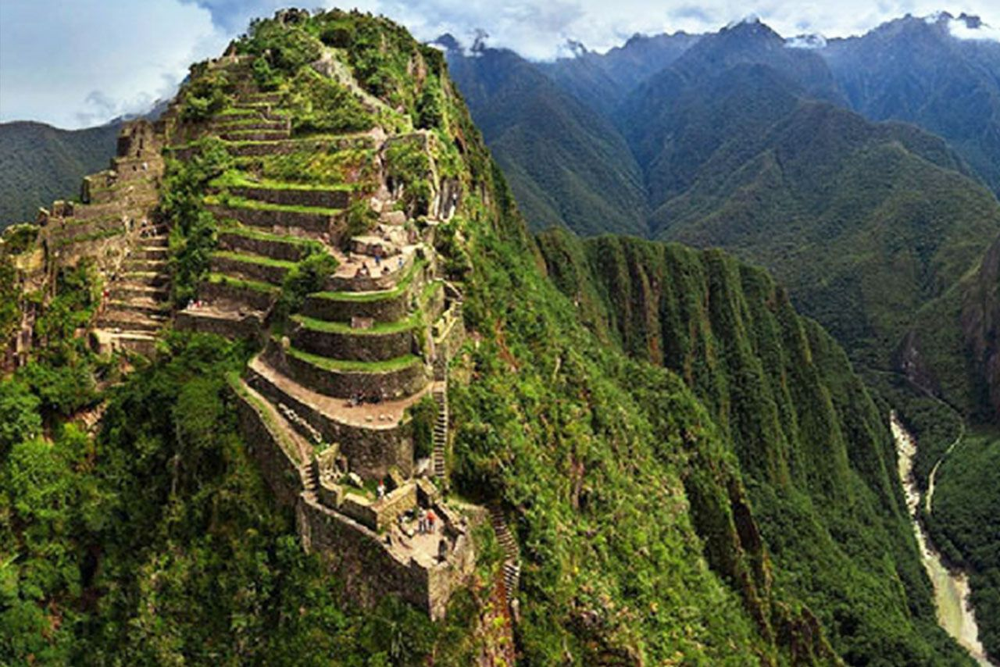
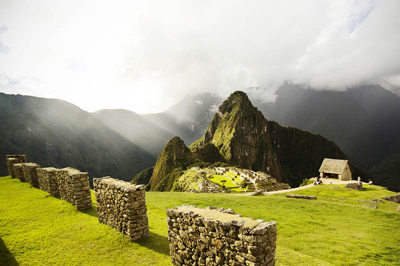
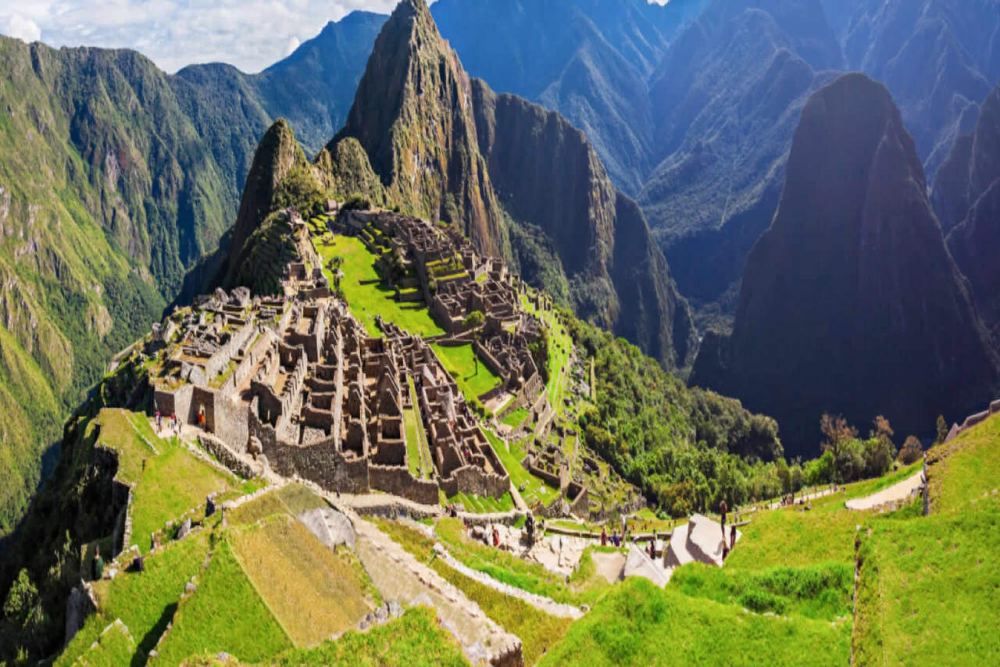
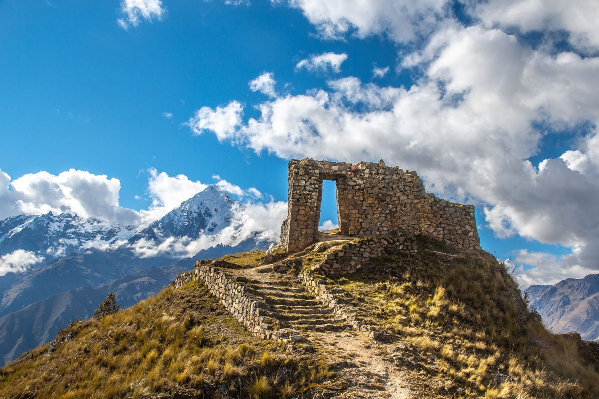
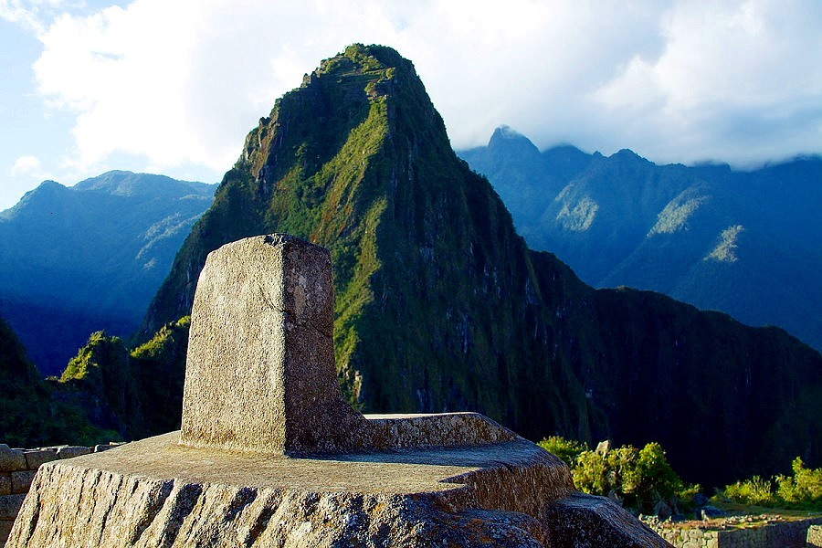

Diseñado por
Machu Picchu es una ciudadela inca ubicada en las alturas de las montañas de los Andes en Perú, sobre el valle del río Urubamba. Se construyó en el siglo XV y luego fue abandonada, y es famosa por sus sofisticadas paredes de piedra seca que combinan enormes bloques sin el uso de un mortero, los edificios fascinantes que se relacionan con las alineaciones astronómicas y sus vistas panorámicas. El uso exacto que tuvo sigue siendo un misterio
Huayna Picchu es el destino más deseado por los visitantes. Esta es la montaña que corona la cima de la Ciudadela Inca. Recorrer sus estrechos y empinados senderos es privilegio de unos pocos. Solo se permiten el ingreso a 400 personas por día.
Es imprescindible conseguir la mejor foto cuando se visita Machu Picchu. La clásica postal de la Ciudadela Inca se obtiene siguiendo el camino marcado desde el ingreso hasta la denominada “Casa del Guardián”. Esta es la imagen más clásica tomada por los visitantes.
La montaña Machu Picchu forma parte de las cumbres del Salkantay, en cuya falda se extiende la Ciudadela Inca. Su cima es más elevada que el Huayna Picchu. Sin embargo, recorrer sus senderos no demanda tanto esfuerzo como el camino empinado del Waynapicchu.
También conocido como el Intipunku, en tiempos de los incas fue la puerta de ingreso a Machu Picchu. Su ubicación estratégica le da una vista total del Santuario Histórico. Su construcción es un tributo al sol debido a que en el solsticio de verano, los rayos solares alcanzan sus muros. Actualmente, los visitantes que recorren el Camino Inca, llegan a la Maravilla del Mundo por este lugar.
Conocido como el ‘Reloj Solar’. Es una estructura tallada sobre roca que en tiempos de los incas debió servir de calendario astronómico. Actualmente es conocida como ‘la roca que irradia energía’. Miles de visitantes solían tocar su estructura y llenarse de energía solar. Sin embargo, eso ya no está permitido. Pese a ello, solo basta con acercarse al lugar para sentir la energía de Machu Picchu.
Hasta hace algún tiempo, algunas personas tomaban un tiempo para disfrutar de la comida peruana en Lima, “la ciudad de los reyes”; en la actualidad Lima es la “Capital Gastronómica de las Américas”, y la meca de la cocina peruana; se estima que alrededor de 200.000 personas vienen a Lima por la comida; y definitivamente, si esta de camino a Machu Picchu en Cusco, le recomendamos probar y disfrutar de la comida peruana. La fusión vino de todas partes; se sabe que en la década de los 60, las elites peruanas no comían comida peruana. Lo elegante e era tener un chef francés o uno italiano. Toda la conjunción de hechos en la historia del Perú, ha generado una de las cocinas más importantes del mundo. Estos son algunos de los platos peruanos que tiene que probar de viaje a Machu Picchu.
Ceviche
Rocoto relleno
La refrescante chicha morada
Anticuchos de corazón
Causa limeña
Turrón
Diseñado por